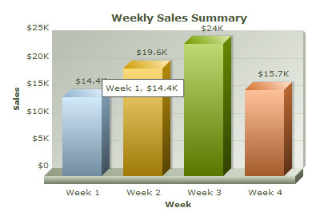

Starting FusionCharts XT, you can use popular jQuery syntax to render and manipulate FusionCharts. This can be done using FusionCharts jQuery plugin.
FusionCharts jQuery plugin helps you to render FusionCharts XT anywhere within a web page. Also it helps you to change chart type, update and retrieve chart data, update functional and cosmetic settings and use all existing features of FusionCharts XT. Adding a chart at the end or beginning of an existing container is easily possible using this plugin. Moreover, a custom selector helps you find all the charts in your page or in any container element.
In the following sections of this page, we will see how to set-up and use this plugin.
Code examples and data files discussed in this section are present in Download Package > Code > jQuery folder
Setting up of FusionCharts jQuery plugin is very easy. You will need to follow these simple steps:
- Copy all or only the required chart SWF files (from the Download Pack > Charts folder) to your preferred folder
- Copy FusionCharts.js and jquery.min.js and FusionCharts.jqueryplugin.js from the Download Pack > Charts folder to the preferred folder
- To create JavaScript charts also copy FusionCharts.HC.js and FusionCharts.HC.Charts.js from the Download Pack > Charts folder to the preferred folder.
- Add references to the required JavaScript files in your code as shown below:
<script type="text/javascript" src="FusionCharts/FusionCharts.js"></script> <script type="text/javascript" src="FusionCharts/jquery.min.js"></script> <script type="text/javascript" src="FusionCharts/FusionCharts.jqueryplugin.js"></script>
This completes the setup.
Please note that you do not need to explicitly include FusionCharts.HC.js and FusionCharts.HC.Charts.js in your code. FusionCharts.js will automatically load these files as and when required.
Creating the first chart using FusionCharts jQuery plugin
Let us now create our first chart using FusionCharts jQuery plugin.
We will start with the same Weekly Sales data which we have created in Creating your first chart page as shown below:
<chart caption='Weekly Sales Summary'
xAxisName='Week' yAxisName='Sales' numberPrefix='$'>
<set label='Week 1' value='14400' />
<set label='Week 2' value='19600' />
<set label='Week 3' value='24000' />
<set label='Week 4' value='15700' />
</chart>
|
|
We had already saved this data as Data.xml.
The code to use this data and generate a Column 3D chart using FusionCharts jQuery plugin is as follows:
<html>
<head>
<title>My First chart using FusionCharts XT</title>
<script type="text/javascript" src="FusionCharts/FusionCharts.js"></script>
<script type="text/javascript" src="FusionCharts/jquery.min.js"></script>
<script type="text/javascript" src="FusionCharts/FusionCharts.jqueryplugin.js"></script>
</head>
<body>
<div id="chartContainer">FusionCharts XT will load here!</div>
<script type="text/javascript"><!--
$(document).ready(function(){
$("#chartContainer").insertFusionCharts({
swfUrl: "FusionCharts/Column3D.swf",
dataSource: "Data.xml",
dataFormat: "xmlurl",
width: "400",
height: "300",
id: "myChartId"
});
});
// -->
</script>
</body>
</html>
We save the above code as FirstChart.html. In the above code we have :
- Selected the element (DIV) with id chartContainer
- Called insertFusionCharts method (available from the plugin)
- Passed all required chart configurations like swfUrl, width, height, dataSource, dataFormat, id etc. to the method as JavaScript object
The insertFusionCharts method renders a chart within the selected element. It takes a set of key or value pairs representing chart configurations as parameter. The set is passed as an Object. The properties of the parameter-object are as follows:
| Chart configuration or property | Description and acceptable value |
| swfUrl | Path (as string) to the chart SWF file. You can get the list of chart SWF file names from Chart List page. |
| id | Sets the DOM Id of the chart. The value is provided as string. (optional) |
| width | Width of the chart (optional - default is 400). The value is provided as number if the width is in pixels or as string if the width is to be set in percentage (for example, "50%") |
| height | Height of the chart (optional - default is 300). The value is provided as number if the height is set in pixels or as string if the height is to be set in percentage (for example, "50%") |
| dataSource | XML or JSON chart data. It can be a URL for XML or JSON. It can also be a string containing XML or JSON object |
| dataFormat | Defines the format of the dataSource.
|
| renderer | Sets the chart renderer engine. Acceptable values are 'flash' and 'javascript'. The default value is automatically selected depending on the availability and support of Flash player. When set to javascript FusionCharts JavaScript class renders pure JavaScript charts. (optional) |
| bgColor | This sets the color of the flash player's background on which a chart gets drawn. It is passed as a string containing hex coded color value. This background color is not same as the background color of a chart. This background is visible while showing chart messages or when chart's bgAlpha is set to less than 100. (optional - default value is "#FFFFFF" i.e., white) |
| scaleMode | Flash player's mode of scaling a chart. NoScale is the default value. There are other settings namely, showAll, ExactFit, noBorder. But these are not supported and might result in distorted charts. (optional) |
| lang | Sets the language for chart messages. It presently supports only English. The value is "EN". (optional) |
| detectFlashVersion | Set to "1" to make FusionCharts Class check whether Flash Player 8 is present in the Browser. (optional - Default value is "0" ) |
| autoInstallRedirect | Set to "1" with detectFlashVersion set to "1" and FusionCharts redirects to Flash Player installation page of Adobe's Web site. (optional - default is "0") |
| debugMode | Sets the chart debug window on. Can take "0" or "1". When set to "1", the chart shows a debug window over itself. (optional - default value is "0") |
The resultant chart will be rendered as shown in the image below:

What happens if Flash player is not available?
In case Flash Player is not available on certain devices (like iPad or iPhone), FusionCharts JavaScript library automatically renders the same chart using JavaScript. If you are running the sample from local file system, please note that you will need to provide the data using Data String method, that is, passing the data (XML/JSON) to the chart as String or JSON Object. Due to security implementation of many browsers which blocks AJAX in local file systems, and since the JavaScript charts use AJAX, the Data URL method (loading data from external XML/JSON file) will not work.
You can also render JavaScript chart using the same method. All you will need to do is to explicitly set the renderer property to javascript. In case you are running the sample from local file system, you will also need to set the chart data as string.
The code snippet below contains the modified sample:
$("#chartContainer").insertFusionCharts({
swfUrl: "FusionCharts/Column3D.swf",
renderer: "JavaScript",
width: "400",
height: "300",
id: "myChartId",
dataFormat: "xml",
dataSource: "<chart caption='Weekly Sales Summary' xAxisName='Week' " +
"yAxisName='Sales' numberPrefix='$'>" +
"<set label='Week 1' value='14400' />" +
"<set label='Week 2' value='19600' />" +
"<set label='Week 3' value='24000' />" +
"<set label='Week 4' value='15700' />" +
"</chart>"
});
The resultant chart will look like the image shown below:

See it live!
Apart from XML you can also provide data in JSON format. You can provide JSON as JavaScript Object, as JSON string or as an URL. To provide data as JSON you will need to pass the JSON data source to dataSource property and set json or jsonurl to dataFormat property.
The code snippet below shows how you can pass JSON Object as data source:
$("#chartContainer").insertFusionCharts({
swfUrl: "FusionCharts/Column3D.swf",
width: "400",
height: "300",
id: "myChartId",
dataFormat: "json",
dataSource: {
"chart": {
"caption" : "Weekly Sales Summary" ,
"xAxisName" : "Week",
"yAxisName" : "Sales",
"numberPrefix" : "$"
},
"data" :
[
{ "label" : "Week 1", "value" : "14400" },
{ "label" : "Week 2", "value" : "19600" },
{ "label" : "Week 3", "value" : "24000" },
{ "label" : "Week 4", "value" : "15700" }
]
}
});
See it live!
The code snippet below shows how you can pass JSON string as data source:
$("#chartContainer").insertFusionCharts({
swfUrl: "FusionCharts/Column3D.swf",
width: "400",
height: "300",
id: "myChartId",
dataFormat: "json",
dataSource: '{ "chart": { "caption" : "Weekly Sales Summary" , "xAxisName" : "Week", "yAxisName" : "Sales", "numberPrefix" : "$" }, ' +
' "data" : [ ' +
' { "label" : "Week 1", "value" : "14400" }, ' +
' { "label" : "Week 2", "value" : "19600" }, ' +
' { "label" : "Week 3", "value" : "24000" }, ' +
' { "label" : "Week 4", "value" : "15700" } ' +
' ] }'
});
See it live!
The code snippet below shows how you can pass an URL containing JSON as data source:
$("#chartContainer").insertFusionCharts({
swfUrl: "FusionCharts/Column3D.swf",
width: "400",
height: "300",
id: "myChartId",
dataFormat: "jsonurl",
dataSource: "data.json"
});
See it live!
Here is a quick reference map of FusionCharts jQuery API. Click on the desired item to know more.
| Name | What it does? |
| insertFusionCharts() method | Renders charts inside containers |
| appendFusionCharts() method | Adds charts at the end of containers |
| prependFusionCharts() method | Adds charts at the beginning of containers |
| cloneFusionCharts() method | Clones charts |
| updateFusionCharts() method | Updates chart settings like type, width, height, data, renderer etc. |
| attrFusionCharts() method | Gets a chart attribute or sets one of multiple chart attributes |
| :FusionCharts selector | Finds all FusionCharts within a page or an element |
| bind() method | Binds an event listener with FusionCharts specific events |
In the following pages we will learn how to use FusionCharts jQuery plugin to: